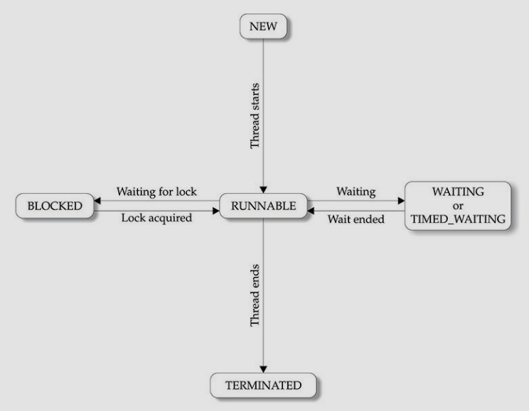

This page contains my notes from the following books:
a) Java: The Complete Reference - Herbert Schildt
b) Beginning Java 8 Language Features - Kishori Sharan
c) Modern Java in Action, 2nd Edition
a) Java: The Complete Reference - Herbert Schildt
b) Beginning Java 8 Language Features - Kishori Sharan
c) Modern Java in Action, 2nd Edition
Index:
Chapter 15: Concepts behind CompletableFuture and Reactive Programming
Chapter 11: Multithreaded Programming
Chapter 6: Threads
Chapter 28: The Concurrency Utilities
Chapter 15: Concepts behind CompletableFuture and Reactive
Programming
What are the 4 pillars of Reactive Programming
- Notes have been taken from Venkat presentation.
Elasticity:
How many threads should I create?
There are 2 scenarios -
a) If your task is computation intensive, then the number of threads that you create should be <= the number of cores in you system.
b) If your task is IO intensive, then in that case your number of threads should be
The point is that it is incorrect to assume that the number of threads depends on the memory.
Ok, so what if my program is doing IO operations on multiple threads? How do I go about calculating the ideal number of threads then?
What is
- ???
Message-Driven:
THe idea is that you should never share database. That is if you have multiple microservices taht want to access the database, you should export the data from the database and make it available to the microservice instead of having them individually access the DB instead.
Responsive:
- Infinite-scrolling is an example. You can amortize the cost of fetching a page by fetching the page in the background while the user is scrolling.
Resilience:
- Fail task successfully.
- Add circuit-breakers to your application/allow partial-access to the app if some data is not reachable
- Reactive programming is functionalProgramming++. It builds on functional composition and lazy evaluation
and takes the abstraction even further
How many threads should I create?
There are 2 scenarios -
a) If your task is computation intensive, then the number of threads that you create should be <= the number of cores in you system.
b) If your task is IO intensive, then in that case your number of threads should be
# of threads <= # of cores / (1 - blocking factor) The point is that it is incorrect to assume that the number of threads depends on the memory.
Ok, so what if my program is doing IO operations on multiple threads? How do I go about calculating the ideal number of threads then?
What is
blocking factor supposed to be? - ???
THe idea is that you should never share database. That is if you have multiple microservices taht want to access the database, you should export the data from the database and make it available to the microservice instead of having them individually access the DB instead.
- Infinite-scrolling is an example. You can amortize the cost of fetching a page by fetching the page in the background while the user is scrolling.
- Fail task successfully.
- Add circuit-breakers to your application/allow partial-access to the app if some data is not reachable
Concurrency vs Parallelism
- Fork/Join Frameworks and Parallel Streams are examples of Parallelism. They divide a task into multiple
sub-tasks and perform those sub-tasks on different cores, CPUs, or even machines.
- Conversely, when you are dealing with concurrency, you are trying to perform multiple loosely-related tasks on the same CPU. The objective being to keep the core as busy as possible to maximize the throughput of your application. You want to avoid blocking a thread and wasting its computational resources while waiting (potentially for quite a while) for a result from a remote service or from interrogating a database.
- Concurrency is a programming property (overlapped execution) that can occur even for a single-core machine, whereas parallelism is a property of execution hardware (simultaneous execution).

- Conversely, when you are dealing with concurrency, you are trying to perform multiple loosely-related tasks on the same CPU. The objective being to keep the core as busy as possible to maximize the throughput of your application. You want to avoid blocking a thread and wasting its computational resources while waiting (potentially for quite a while) for a result from a remote service or from interrogating a database.
- Concurrency is a programming property (overlapped execution) that can occur even for a single-core machine, whereas parallelism is a property of execution hardware (simultaneous execution).
Evolving Java support for expressing concurrency
- Terms: Java had locks (via
- What is the difference betn
- Java 9, provided explicit support for distributed asynchronous programming. (How?)
- A process can request that the operating system allocate it one or more threads. Each core can be used for one or more processes or threads, but if your program doesn't use threads, it's effectively using only one of the processor cores.
- My task manager shows that I have 4 cores (8 logical processors), but 4400+ threads running currently. How is this possible? The number of operating system (and Java) threads will significantly exceed the number of hardware threads, so all the hardware threads (We’d use the word core here, but CPUs like the Intel i7-6900K have multiple hardware threads per core) can be usefully occupied executing code even when some operating-system threads are blocked or sleeping. Each core would be able to execute one thread simultaneously. So if there are 30 threads and 4 cores, 26 threads will be waiting to get context switched to get executed. Something like, thread 1-4 runs for 200ms and then 5-8 runs for 200 ms and so on. A single core can also support multiple threads.
- See also this difference between software threads, hardware threads, and java threads.
- Note that the JVM runs on top of a native OS, and that the JVM specification does not specify what model to use for mapping Java threads to kernel threads. This decision is JVM implementation dependant, and may be one-to-one, many-to-many, or many to one.. (On a UNIX system the JVM normally uses PThreads and on a Windows system it normally uses windows threads.)
- Java 5 provided the Executor framework and the idea of thread pools as a higher-level idea capturing the power of threads, which allow Java programmers to decouple task submission from task execution.
- So how do I use concurrency in my program?
- You could manually create
- So what should we do instead?
- Use Thread Pools instead of directly creating a thread.
- The
- It uses the
- Thread pools are bad though. Why?
- A thread pool with k threads can execute only k tasks concurrently. Any further task submissions are held in a queue and not allocated a thread until one of the existing tasks completes. This situation is generally good, in that it allows you to submit many tasks without accidentally creating an excessive number of threads, but you have to be wary of tasks that sleep or wait for I/O or network connections.
- For eg., if you have 20 tasks submitted to a thread pool of size 5, and 3 of those threads in the pool end up waiting/blocking on some kind of I/O op, the remaining 15 tasks in the queue will end up having only 2 threads for their execution.
- It's even possible to cause deadlock in a thread pool if earlier task submissions or already running tasks, need to wait for later task submissions, which is a typical use-pattern for Futures.
synchronized classes and methods), Runnables, and
Threads. The ExecutorService interface extends the Executor interface
with the
submit method to run a Callable; the Executor interface merely has an
execute method for Runnables. Hence, ExecutorService can execute both
Runnables and Callables. Callable<T>
and Future<T>, which produced higher-level and result-returning variants of
Runnable and Thread and used generics. - What is the difference betn
Callable and Runnable? SO Link - Java 9, provided explicit support for distributed asynchronous programming. (How?)
- A process can request that the operating system allocate it one or more threads. Each core can be used for one or more processes or threads, but if your program doesn't use threads, it's effectively using only one of the processor cores.
- My task manager shows that I have 4 cores (8 logical processors), but 4400+ threads running currently. How is this possible? The number of operating system (and Java) threads will significantly exceed the number of hardware threads, so all the hardware threads (We’d use the word core here, but CPUs like the Intel i7-6900K have multiple hardware threads per core) can be usefully occupied executing code even when some operating-system threads are blocked or sleeping. Each core would be able to execute one thread simultaneously. So if there are 30 threads and 4 cores, 26 threads will be waiting to get context switched to get executed. Something like, thread 1-4 runs for 200ms and then 5-8 runs for 200 ms and so on. A single core can also support multiple threads.
- See also this difference between software threads, hardware threads, and java threads.
- Note that the JVM runs on top of a native OS, and that the JVM specification does not specify what model to use for mapping Java threads to kernel threads. This decision is JVM implementation dependant, and may be one-to-one, many-to-many, or many to one.. (On a UNIX system the JVM normally uses PThreads and on a Windows system it normally uses windows threads.)
- Java 5 provided the Executor framework and the idea of thread pools as a higher-level idea capturing the power of threads, which allow Java programmers to decouple task submission from task execution.
- So how do I use concurrency in my program?
- You could manually create
new Thread() and then use Callable or
Runnable. But then the question is: how many new threads should you create? Remember if you
exceed the number of operating system threads that the system is capable of, it would likely
cause the application to crash.
- So what should we do instead?
- Use Thread Pools instead of directly creating a thread.
- The
ExecutorService in Java provides a way to submit a task and then obtain its result later.
- It uses the
ExecutorService newFixedThreadPool(int nThreads) method. This method creates a
ExecutorService containing nThreads (often called worker threads) and
stores them in a thread pool, from which unused threads are taken to run
submitted tasks on a first-come, first-served basis. These threads are returned to the pool
when their tasks terminate. So you can submit a large number of tasks to the pool while keeping the
total number of threads created to a hardware-appropriate number. Note the wording: The programmer provides
a
task (a Runnable or a Callable), which is executed by a thread.
- Thread pools are bad though. Why?
- A thread pool with k threads can execute only k tasks concurrently. Any further task submissions are held in a queue and not allocated a thread until one of the existing tasks completes. This situation is generally good, in that it allows you to submit many tasks without accidentally creating an excessive number of threads, but you have to be wary of tasks that sleep or wait for I/O or network connections.
- For eg., if you have 20 tasks submitted to a thread pool of size 5, and 3 of those threads in the pool end up waiting/blocking on some kind of I/O op, the remaining 15 tasks in the queue will end up having only 2 threads for their execution.
- It's even possible to cause deadlock in a thread pool if earlier task submissions or already running tasks, need to wait for later task submissions, which is a typical use-pattern for Futures.
Threads and higher-level abstractions
Chapter 11: MultiThreaded Programming
What are the two types of multitasking
- Two types:
- process-based:
- A process is, in essence, a program that is executing. Thus, process-based multitasking is the feature that allows your computer to run two or more programs concurrently. For example, process-based multitasking enables you to run the Java compiler at the same time that you are using a text editor or visiting a web site. In process-based multitasking, a program is the smallest unit of code that can be dispatched by the scheduler.
- Processes are heavy-weight tasks that require their own separate address space.
- Interprocess communication is expensive and limited.
- Context switching from one process to another is also costly. - thread-based:
- It is the smallest unit of dispatchable code. This means that a single program can perform two or more tasks simultaneously. For example, a text editor can print text at the same time as the text is being formatted, so long as the two tasks are being performed by two different threads.
- Threads are lighter-weight and require less overhead when compared to process-based multitasking
- They share the same address space.
- Interthread communication is inexpensive, and context switching from one thread to another is lower in cost.
The Java Thread Model
- Single threaded applications use an approach called event loop with polling. In general, in a
single-threaded environment, when a thread blocks (that is, suspends execution) because it is waiting for
some resource, the entire program stops running.
- The benefit of Java's multithreading is that the main loop/polling mechanism is eliminated. When a thread blocks in a Java program, only the single thread that is blocked pauses. All other threads continue to run.
- Threads exist in several states. A thread can be running. It can be ready to run as soon as it gets CPU time. A running thread can be suspended, which temporarily halts its activity. A suspended thread can be resumed, allowing it to pick up where it left off. A thread can be blocked when waiting for a resource. At any time, a thread can be terminated, which halts its execution immediately. Once terminated, a thread cannot be resumed.
- The benefit of Java's multithreading is that the main loop/polling mechanism is eliminated. When a thread blocks in a Java program, only the single thread that is blocked pauses. All other threads continue to run.
- Threads exist in several states. A thread can be running. It can be ready to run as soon as it gets CPU time. A running thread can be suspended, which temporarily halts its activity. A suspended thread can be resumed, allowing it to pick up where it left off. A thread can be blocked when waiting for a resource. At any time, a thread can be terminated, which halts its execution immediately. Once terminated, a thread cannot be resumed.
Thread Priorities
- Java assigns to each thread a priority. Thread priorities are integers that specify the relative priority
of one thread to another.
- A thread's priority is used to decide when to switch from one running thread to the next. This is called a context switch.
- Rules for context switch:
- A thread's priority is used to decide when to switch from one running thread to the next. This is called a context switch.
- Rules for context switch:
- A thread can voluntarily relinquish control. This occurs when explicitly yielding, sleeping, or when blocked. In this scenario, all other threads are examined, and the highest-priority thread that is ready to run is given the CPU.
- A thread can be preempted by a higher-priority thread. In this case, a lower-priority thread that does not yield the processor is simply preempted - no matter what it is doing - by a higher-priority thread. Basically, as soon as a higher-priority thread wants to run, it does. This is called preemptive multitasking.
The Thread Class and the Runnable Interface
- To create a new thread, you program will extend the
Thread class or implement the Runnable
interface.
The Main Thread
- main thread is the thread that is executed when when your program begins. The main thread is
important for two reasons:
- It is the thread from which other "child" threads will be spawned.
- Often, it must be the last thread to finish execution because it performs various shutdown actions.
Creating a Thread
- You create a thread by instantiating an object of type
Thread. This can be done in two ways:
- You can implement the
Runnableinterface - You can extend the
Threadclass itself
Implementing Runnable
- The
- Inside
- The
- After the new thread is created, it will not start running unless you call its
The following code would then create a thread and start it running:
- Passing
Runnable class should be implemented by any class whose instances are intended to be
executed by a thread. The class must define a method of no arguments called run. - Inside
run() you will define the code that constitutes the new thread. After you create a
class that implements Runnable, you will instantiate an object of type Thread from
within that class. - The
Thread class defines many constructors. The one we use here is:
Thread(Runnable threadObj, String threadName). Here, threadObj is an instance of a class
that implements the Runnable interface. This defines where the execution of the thread will
begin. The name of the new thread is specified by threadName. - After the new thread is created, it will not start running unless you call its
start()
method. The start() method actually calls the run() method of the class that is
referenced by threadObj. class PrimeRun implements Runnable { long minPrime; PrimeRun(long minPrime) { this.minPrime = minPrime; } public void run() { // compute primes larger than minPrime }}The following code would then create a thread and start it running:
PrimeRun p = new PrimeRun(143);new Thread(p).start();//orThread t = new Thread(p);t.start();- Passing
this as the first argument indicates that you want the new thread to call the
run() method on this object. Inside main(), start() is called, which
starts the thread of execution beginning at the run() method. This causes the child thread's
for loop to begin. Next the main thread enters its for loop. Both threads continue running, sharing the CPU
in single-core systems, until their loops finish.
Extending Thread
- The second way to create a thread is to create a new class that extends
The following code would then create a thread and start it running:
- What's
the difference between start() and run()
- Well if you defined the
- Another difference between
- When should you use
- Almost always you will be using the
- Classes should be extended only when they are being enhanced or adapted in some way. So, if you will not be overriding any of Thread's other methods, it is probably best simply to implement
- Why do you need a
- Because sometimes (almost never, but sometimes) you want to be able to change the basic behaviour of Thread. That's when you'll need to extend it. You can change it by overriding a method from the Thread class, you can't do it by implementing one from Runnable.
- Oracle link explaining how you would create and use a new Thread by extending Thread or by implementing Runnable
Thread, and then to
create an
instance of that class. The extending class must override the run() method, which is the entry
point for
the new thread. As before, a call to start() begins execution of the new thread.
class PrimeThread extends Thread { long minPrime; PrimeThread(long minPrime) { this.minPrime = minPrime; } public void run() { // compute primes larger than minPrime }}The following code would then create a thread and start it running:
PrimeThread p = new PrimeThread(143);p.start();
-
- Well if you defined the
NewThread class as: calling run() is literally
going to call the run() method, like a
literal method call. No new thread is going to be created. So in the example
above, if you wrote newThread.thread.run() on Line 32, there would be a method call to the
run() method. The run() method would finish executing. And only after that would
the execution of the loop in te Main class even start. Only if you use the start() method is a
new thread created and the code inside the run() method executed.
- Another difference between
start() and run() in Java thread is that you can not
call start() twice. Once started, second start() call will throw IllegalStateException
in Java while you can call run() method several times since it's just an ordinary method.
- When should you use
Runnable vs when should you use Thread?.
- Almost always you will be using the
MyThread implements Runnable interface to create a
new thread.
- Classes should be extended only when they are being enhanced or adapted in some way. So, if you will not be overriding any of Thread's other methods, it is probably best simply to implement
Runnable.
Also, by implementing Runnable, your thread class does not need to inherit Thread, making it free to inherit
a
different class.
//TODO: Go through this link for description of concurrency.
- Why do you need a
MyThread extends Thread way of creating threads?
- Because sometimes (almost never, but sometimes) you want to be able to change the basic behaviour of Thread. That's when you'll need to extend it. You can change it by overriding a method from the Thread class, you can't do it by implementing one from Runnable.
- Oracle link explaining how you would create and use a new Thread by extending Thread or by implementing Runnable
Creating Multiple Threads
- Your program can spawn as many threads as you need.
- In the below example we are creating multiple threads. In the printout, note where the Main thread is exiting. It is not like Main is waiting for the other threads to end.
- In the below example we are creating multiple threads. In the printout, note where the Main thread is exiting. It is not like Main is waiting for the other threads to end.
Using
isAlive() and join()
- Look at the previous example. The main thread finished ealrier than the child threads. Often, you would
want the main thread to finish last.
- Two ways exist to determine whether a thread has finished or not. First, you can call
- But you should prefer the
- Two ways exist to determine whether a thread has finished or not. First, you can call
isAlive() on the thread which returns true if the thread is still running.
- But you should prefer the
join() method. This method waits until the thread on which it is
called terminates. It's name comes from the concept of the calling thread waiting until the specified thread
joins it. join also allows you to specify a maximum amount of time that you want to
wait for the specified thread to terminate.
void join(): Waits for this thread to die.void join(long millis): Waits at most millis milliseconds for this thread to die.void join(long millis, int nanos): Waits at most millis milliseconds plus nanos nanoseconds for this thread to die.
mt1.join (and others)
will wait for the mt1 to finish. The mt2 thread is running in parallel and is not
affected by the mt1 and mt1.join() method calls at all. StackOverflow
Link
Thread Priorities
- Thread priority is just a hint to OS task scheduler and is dependent on the underlying OS. OS will try to
allocate more resources to a high priority thread but it does not guarantee it. So if your program is
dependent on thread priorities than you are in-turn binding your program to underlying OS, which is bad.
- From Java Concurrency in Practice: Avoid the temptation to use thread priorities, since they increase platform dependence and can cause liveness problems. Most concurrent applications can use the default priority for all threads. Link to post on SO
- From Java Concurrency in Practice: Avoid the temptation to use thread priorities, since they increase platform dependence and can cause liveness problems. Most concurrent applications can use the default priority for all threads. Link to post on SO
Synchronization
- When two or more threads need access to a shared resource, they need some way to ensure that the resource
will be used by only one thread at a time. The process by which this is achieved is called synchronization.
- Key to synchronization is the concept of the monitor. A monitor is an object that is used as a mutually exclusive lock. Only one thread can own a monitor at a given time. When a thread acquires a lock, it is said to have entered the monitor. All other threads attempting to enter the locked monitor will be suspended until the first thread exits the monitor. These other threads are said to be waiting for the monitor. A thread that owns a monitor can reenter the same monitor if it so desires.
- SO Link explaining what a monitor actually is
- This is what happens when your code is NOT synchronized. - By calling
- Key to synchronization is the concept of the monitor. A monitor is an object that is used as a mutually exclusive lock. Only one thread can own a monitor at a given time. When a thread acquires a lock, it is said to have entered the monitor. All other threads attempting to enter the locked monitor will be suspended until the first thread exits the monitor. These other threads are said to be waiting for the monitor. A thread that owns a monitor can reenter the same monitor if it so desires.
- SO Link explaining what a monitor actually is
- This is what happens when your code is NOT synchronized. - By calling
sleep(), the call() method allows execution to switch to another
thread. This results in the
mixed-up output of the three message strings. In this program, nothing exists to stop all three threads from
calling the same method, on the same object, at the same time. This is known as a race condition, because
the three threads are racing each other to complete the method.
Using
synchronized methods
- To prevent the above, you need to serialize the access to the method
- This prevents other threads from entering the method
[Hello]
[World]
[Synchronized]
Example of using the synchronized statement:
Well we would have expected "Hello Synchronized World". But threads gonna thread I guess.
Any time that you have a method, or group of methods, that manipulates the internal state of an object in a multithreaded situation, you should use the
call().
That is, you must restrict its access to only one thread at a time. To do this, you simply need to precede
call()'s definition with the keyword synchronized.
class CallMe{
synchronized void callMe(){...}
}
- This prevents other threads from entering the method
call() when another thread is already
using it. And after we make this change, we get the correct output:
[Hello]
[World]
[Synchronized]
Example of using the synchronized statement:
Any time that you have a method, or group of methods, that manipulates the internal state of an object in a multithreaded situation, you should use the
synchronized keyword to guard the state from race
conditions.
Remember, once a thread enters any synchronized method on an instance, no other thread can enter any other
synchronized method on the same instance. However, nonsynchronized methods on that instance will continue to
be callable.
Using
synchronized Statements
- Creating
- Imagine that you want to synchronize access to objects of a class that was not designed for multithreaded access. That is, the class does not use synchronized methods. Further, this class was not created by you, but by a third party, and you do not have access to the source code. Thus, you can't add synchronized to the appropriate methods within the class. How can access to an object of this class be synchronized?
- You put calls to the methods defined by the class inside a
- This is the general form of the
Here
- The previous example can then be rewritten in the following manner:
- Why do we get the
warning on line 30?
synchronized methods within classes might not always work.
- Imagine that you want to synchronize access to objects of a class that was not designed for multithreaded access. That is, the class does not use synchronized methods. Further, this class was not created by you, but by a third party, and you do not have access to the source code. Thus, you can't add synchronized to the appropriate methods within the class. How can access to an object of this class be synchronized?
- You put calls to the methods defined by the class inside a
synchronized block.
- This is the general form of the
synchronized statement:
synchronized(objRef){
//Statements to be synchronized
}
Here
objRef is the reference to the object being synchronized. A synchronized block ensures
that a call to a method that is a member of objRef's class occurs only after the current thread
has successfully entered objRef's monitor.
- The previous example can then be rewritten in the following manner:
Interthread Communication
- //TODO: Read up on what Polling is
- In Java , you have
- The problem with this code is that although the
- Code after using inter-thread communication:
- Inside
- In Java , you have
wait(), notify(), and notifyAll() methods. These
methods are implemented as final methods in Object, so all classes have them. All
3 methods can be called only from within a synchronized context.
notify():
- Wakes up a single thread that is waiting on this object's monitor. If any threads are waiting on this object, one of them is chosen to be awakened. The choice is arbitrary and occurs at the discretion of the implementation. A thread waits on an object's monitor by calling one of the wait methods.
- The awakened thread will not be able to proceed until the current thread relinquishes the lock on this object. The awakened thread will compete in the usual manner with any other threads that might be actively competing to synchronize on this object; for example, the awakened thread enjoys no reliable privilege or disadvantage in being the next thread to lock this object.
- This method should only be called by a thread that is the owner of this object's monitor. A thread becomes the owner of the object's monitor in one of three ways:- By executing a synchronized instance method of that object.
- By executing the body of a synchronized statement that synchronizes on the object.
- For objects of type Class, by executing a synchronized static method of that class.
notifyAll:
- Wakes up all threads that are waiting on this object's monitor. A thread waits on an object's monitor by calling one of the wait methods. The awakened threads will not be able to proceed until the current thread relinquishes the lock on this object. The awakened threads will compete in the usual manner with any other threads that might be actively competing to synchronize on this object; for example, the awakened threads enjoy no reliable privilege or disadvantage in being the next thread to lock this object.
- This method should only be called by a thread that is the owner of this object's monitor. See the notify method for a description of the ways in which a thread can become the owner of a monitor.-
wait():
- Causes the current thread to wait until either another thread invokes the notify() method or the notifyAll() method for this object, or a specified amount of time has elapsed. The current thread must own this object's monitor.
- This method causes the current thread (call it T) to place itself in the wait set for this object and then to relinquish any and all synchronization claims on this object. Thread T becomes disabled for thread scheduling purposes and lies dormant until one of four things happens:- Some other thread invokes the notify method for this object and thread T happens to be arbitrarily chosen as the thread to be awakened.
- Some other thread invokes the notifyAll method for this object.
- Some other thread interrupts thread T.
- The specified amount of real time has elapsed, more or less. If timeout is zero, however, then real time is not taken into consideration and the thread simply waits until notified.
- The problem with this code is that although the
put() and get() methods on Q are
synchronized, nothing is stopping the producer from overrunning the consumer, nor will anything stop the
consumer from consuming the same queue value twice. Hence you get erroneous output.
- Inside
get(), wait() is called. This causes it's execution to suspend until
Producer notifies you that some data is ready. When this happens execution inside get resumes.
After the data has been obtained get calls notify. This tells the producer that it
is ok to put more data in the queue. Inside put(), wait suspends execution until
Consumer has removed the item from the queue. When the execution resumes, the next item of data is out in
the queue, and notify is called. This tells the Consumer that it should now remove it.
Deadlock
- A special type of error that you need to avoid that relates specifically to multitasking is deadlock,
which occurs when two threads have a circular dependency on a pair of synchronized objects. For example,
suppose one thread enters the monitor on object X and another thread enters the monitor on object Y. If the
thread in X tries to call any synchronized method on Y, it will block as expected. However, if the thread in
Y, in turn, tries to call any synchronized method on X, the thread waits forever, because to access X, it
would have to release its own lock on Y so that the first thread could complete.
- Code showing how Deadlock can be created:
- The next example creates two classes, A and B, with methods foo() and bar(), respectively, which pause briefly before trying to call a method in the other class. The main class, named Deadlock, creates an A and a B instance, and then calls deadlockStart() to start a second thread that sets up the deadlock condition. The foo() and bar() methods use sleep() as a way to force the deadlock condition to occur.
- The next example creates two classes, A and B, with methods foo() and bar(), respectively, which pause briefly before trying to call a method in the other class. The main class, named Deadlock, creates an A and a B instance, and then calls deadlockStart() to start a second thread that sets up the deadlock condition. The foo() and bar() methods use sleep() as a way to force the deadlock condition to occur.
Suspending, Resuming, and Stopping Threads
- A thread must be designed so that the
- Typically, this is accomplished by establishing a flag variable that indicates the execution state of the thread. As long as this flag is set to "running," the
- Apparently this example was supposed to teach me something:
run() method periodically checks to determine whether
that thread should suspend, resume, or stop its own execution.
- Typically, this is accomplished by establishing a flag variable that indicates the execution state of the thread. As long as this flag is set to "running," the
run() method must continue to let the
thread execute. If this variable is set to "suspend", the thread must pause. If it is set to "stop", the
thread must terminate. Of course, a variety of ways exist in which to write such code, but the central theme
will be the same for all programs.
- Apparently this example was supposed to teach me something:
Obtaining a Thread's State
- You can obtain the current state of a thread by using:
-
getState(). This returns a value of
type Thread.State that indicates the state of the Thread at the time the call was made.
-
State is an enumeration that is defined by Thread. These are the values that can
be returned by getState().
| Value | State |
|---|---|
| BLOCKED | A thread that has suspended execution because it was waiting to acquire a lock |
| NEW | A thread that has not begun execution |
| RUNNABLE | A thread that is either currently executing or will execute when it gains access to the CPU |
| TERMINATED | A thread that has completed execution |
| TIMED_WAITING | A thread that has suspended execution for a specified period of time, such as when it has
called sleep(). This state is also entered when a timeout version of
wait() or join() is called.
|
| WAITING | A thread that has suspended execution because it is waiting for some action to occur. For
example, it is waiting because of a call to a non-timeout version of wait() or
join().
|

- This is how you can use the Thread.State in your code: Thread.State ts = thrd.getState();if (ts == Thread.State.RUNNABLE) {//do stuff}Chapter 6: Threads
- Look here.
-
-
volatile
- Link to SO where the example uses
Strings.
volatile and atomic
- Read on SO here.
- Read on SO here
wait and sleep?
Chapter 28: The Concurrency Utilities
Parallel Programming via the Join/Fork Framework
- It is important to point out the distinction between traditional multithreading and parallel programming.
- In the past, most computers had a single CPU and multithreading was primarily used to take advantage of idle time, such as when a program is waiting for user input. Using this approach, one thread can execute while another is waiting. In other words, on a single-CPU system, multithreading is used to allow two or more tasks to share the CPU. This type of multithreading is typically supported by an object of type Thread (as described in Chapter 11). Although this type of multithreading will always remain quite useful, it was not optimized for situations in which two or more CPUs are available (multicore computers).
- When multiple CPUs are present, a second type of multithreading capability that supports true parallel execution is required. With two or more CPUs, it is possible to execute portions of a program simultaneously, with each part executing on its own CPU. This can be used to significantly speed up the execution of some types of operations, such as sorting, transforming, or searching a large array. In many cases, these types of operations can be broken down into smaller pieces (each acting on a portion of the array), and each piece can be run on its own CPU.
- In the past, most computers had a single CPU and multithreading was primarily used to take advantage of idle time, such as when a program is waiting for user input. Using this approach, one thread can execute while another is waiting. In other words, on a single-CPU system, multithreading is used to allow two or more tasks to share the CPU. This type of multithreading is typically supported by an object of type Thread (as described in Chapter 11). Although this type of multithreading will always remain quite useful, it was not optimized for situations in which two or more CPUs are available (multicore computers).
- When multiple CPUs are present, a second type of multithreading capability that supports true parallel execution is required. With two or more CPUs, it is possible to execute portions of a program simultaneously, with each part executing on its own CPU. This can be used to significantly speed up the execution of some types of operations, such as sorting, transforming, or searching a large array. In many cases, these types of operations can be broken down into smaller pieces (each acting on a portion of the array), and each piece can be run on its own CPU.
The Main Fork/Join Classes
- At the core of the Fork/Join framework are the following 4 classes:
| Class | Description |
|---|---|
| ForkJoinTask<V> | An abstract class that defines a Task |
| ForkJoinPool | Manages the execution of ForkJoinTasks |
| RecursiveAction | A subclass of ForkJoinTask<V> for tasks that do not return value |
| RecursiveTask<V> | A subclass of ForkJoinTask<V> for tasks that return values |
1) ForkJoinTask<V>
-